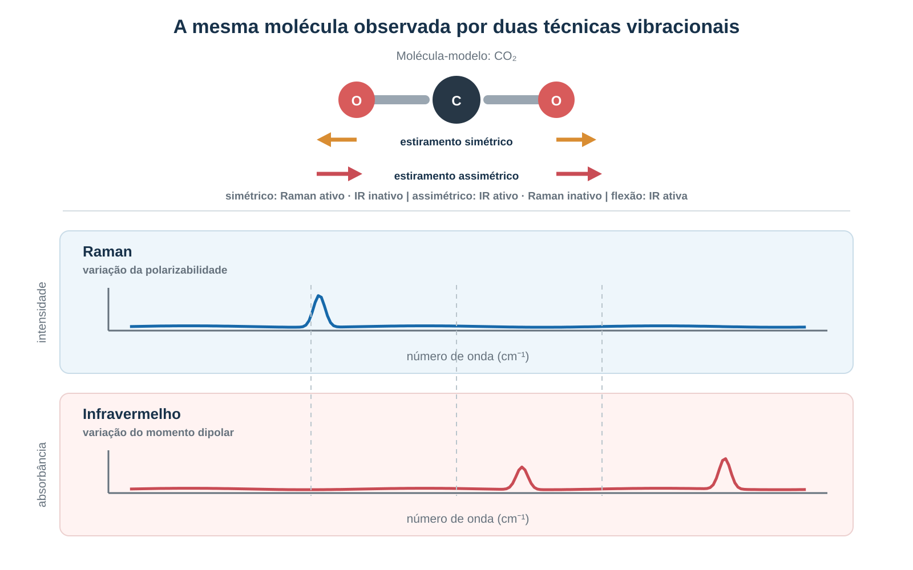
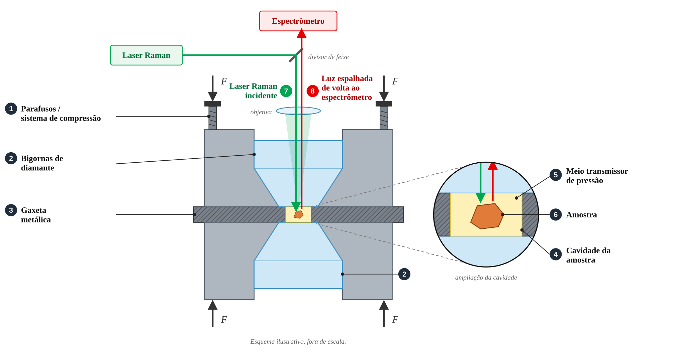
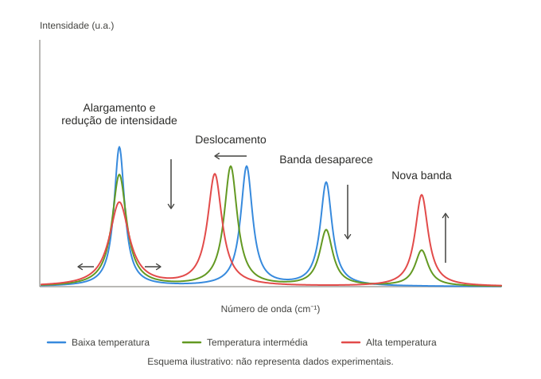
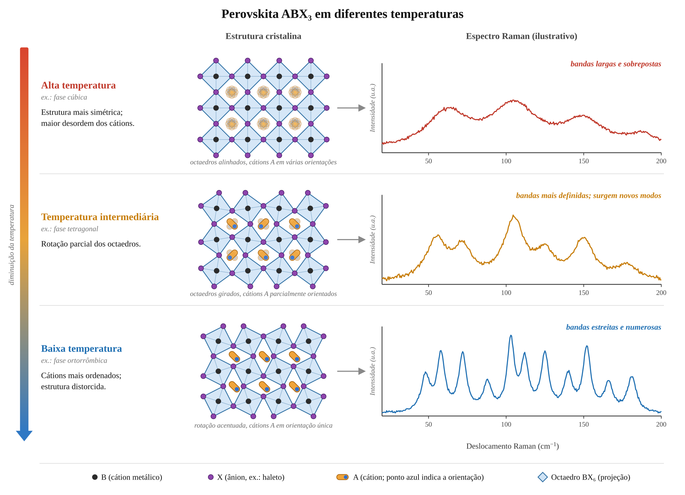
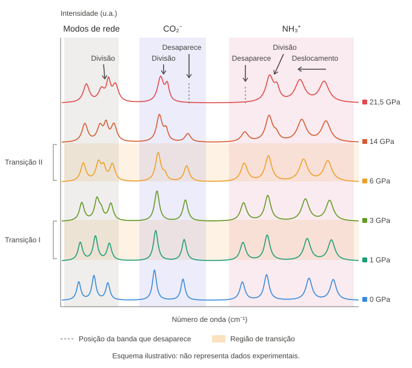
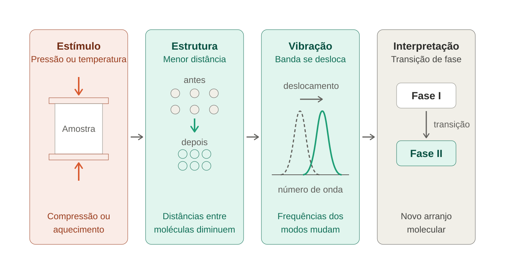

Por que trabalhar com materiais sob condições extremas de temperatura e pressão
Espectroscopistas submetem materiais a temperatura e pressões extremas porque essas variáveis funcionam como formas controladas de perturbar a matéria. Em condições ambientes, um cristal pode permanecer em uma única estrutura e apresentar apenas uma parte de seu comportamento. Ao aquecê-lo, resfriá-lo ou comprimi-lo, o pesquisador altera as distâncias interatômicas, a mobilidade molecular, as ligações de hidrogênio, os modos vibracionais e o equilíbrio entre diferentes fases. Raman e infravermelho registram essas mudanças diretamente nas frequências, intensidades, larguras e no aparecimento ou desaparecimento de bandas.
A pressão reduz o volume disponível e modifica a geometria da estrutura. A temperatura aumenta a agitação térmica e pode ativar movimentos que estavam congelados. Em muitos sistemas, a pressão reduz o volume e favorece configurações mais compactas, mas também pode induzir distorções, desordem, amorfização, reações ou decomposição. A temperatura aumenta as flutuações térmicas e pode alterar a população de configurações e fases. Por isso, experimentos em uma grade de pressão e temperatura ajudam a separar efeitos estruturais, dinâmicos e térmicos que se confundiriam em uma única medida.
O que Raman e IR conseguem revelar
Uma vibração molecular ou um modo de rede aparece no espectro quando satisfaz a regra de seleção da técnica. No infravermelho, a vibração precisa produzir mudança no momento dipolar. No Raman, o movimento precisa alterar a polarizabilidade, isto é, a facilidade com que a distribuição eletrônica da matéria é deformada pelo campo elétrico da luz. As técnicas são, portanto, complementares. Em estruturas centrossimétricas, a regra de exclusão mútua prevê que um modo fundamental não seja simultaneamente ativo em IR e Raman; essa regra não se aplica de forma geral a estruturas sem centro de inversão.
A informação não está apenas na posição de uma banda. O deslocamento do número de onda pode refletir mudanças na constante de força, na geometria, na tensão, na anarmonicidade ou no acoplamento entre modos. A largura da banda pode fornecer informação sobre desordem, tempo de vida do fônon e interações, desde que se considerem também a resolução instrumental, a sobreposição de bandas e a heterogeneidade da amostra. Mudanças de intensidade podem estar relacionadas a orientação, simetria ou população de fases, mas também a polarização, ressonância, absorção e geometria experimental. O surgimento ou desaparecimento de bandas é compatível com mudanças de simetria, ordem ou seleção espectroscópica, mas não constitui, isoladamente, prova de uma transformação estrutural específica.

Essa leitura é especialmente importante perto de uma transição de fase. Em vez de observar somente a estrutura antes e depois da transformação, o espectroscopista acompanha o caminho: identifica anomalias, localiza a faixa de pressão ou temperatura em que elas aparecem e verifica se a mudança é reversível. A espectroscopia fornece, assim, uma medida local e dinâmica da transformação, enquanto técnicas como difração de raios X ajudam a determinar a estrutura cristalográfica global.
Por que usar alta pressão
A pressão é uma ferramenta para alterar a estrutura sem mudar necessariamente a composição química. Em uma célula de bigorna de diamante, uma pequena amostra é comprimida entre duas pontas de diamante. O dispositivo permite observar a amostra enquanto a pressão é aumentada, e pode ser combinado com aquecimento, Raman, infravermelho, difração e outras técnicas. Instalações de alta pressão usam essas células para estudar relações de fase, equações de estado, cinética de transformações, reações químicas e propriedades de sólidos, líquidos e materiais amorfos.
O valor científico está em transformar a pressão em uma variável de sintonia. Ao comprimir um cristal, o pesquisador pode fortalecer ou reorganizar contatos intermoleculares, modificar ângulos de ligação, aproximar grupos funcionais e alterar a competição entre diferentes arranjos. Em alguns casos, a pressão revela uma fase que não existe em condições ambientes. Em outros, mostra que uma alteração observada no espectro não é uma nova fase, mas uma mudança conformacional, uma reorientação molecular ou uma mudança na rede de ligações de hidrogénio.

A pressão também pode produzir fases metastáveis. Depois da descompressão, o material pode retornar ao estado inicial ou permanecer em um arranjo diferente. Essa diferença é essencial para entender a paisagem de energia do sólido. Um processo reversível sugere que a transformação pode ser governada por um equilíbrio entre fases. Um processo irreversível pode envolver barreiras cinéticas, amorfização, decomposição ou rearranjos que não são desfeitos espontaneamente.
Por que variar a temperatura
A temperatura permite estudar como a energia térmica reorganiza a matéria. Ao aquecer, os átomos e moléculas oscilam com maior amplitude, os fônons interagem de modo mais intenso e as bandas podem se deslocar e alargar. Ao resfriar, movimentos rotacionais ou conformacionais podem ser desacelerados ou congelados. A redução da largura das bandas pode indicar menor flutuação dinâmica; o aparecimento de novas bandas pode indicar ordenamento molecular ou redução de simetria.
Em experimentos de alta temperatura, é importante distinguir a resposta da amostra do aquecimento produzido pelo próprio laser de excitação. Em células de bigorna de diamante aquecidas a laser, uma folha metálica absorve a radiação de aquecimento e transfere calor para a amostra. A temperatura pode ser estimada pela radiação térmica e também pela razão entre sinais Stokes e anti-Stokes. Essa configuração permite medir Raman in situ em condições de pressão e temperatura elevadas.

A temperatura também é necessária para estudar materiais em condições de operação. Uma perovskita usada em um dispositivo pode trabalhar sob iluminação, aquecimento e ciclos térmicos. Um aminoácido pode mudar sua organização cristalina em temperaturas criogênicas ou próximas àquelas de processos de desidratação. Medir apenas à temperatura ambiente pode ocultar essas fases e levar a uma interpretação incompleta da estabilidade do material.
Perovskitas
As perovskitas de haletos metálicos híbridas são um exemplo particularmente claro da utilidade das condições extremas. Elas combinam uma sub-rede inorgânica de metal e haleto com cátions orgânicos alojados em cavidades da estrutura. Esses cátions podem girar, transladar e interagir com a rede por ligações de hidrogênio e por impedimento estérico. As propriedades ópticas e eletrônicas resultam, em parte, do acoplamento entre esses dois componentes.
A temperatura revela quando os movimentos do cátion orgânico ficam mais lentos ou se ordenam. Em MAPbBr3, estudos Raman dependentes da temperatura identificaram anomalias próximas de 236, 155 e 148 K. As duas primeiras foram associadas a mudanças na dinâmica do cátion metilamônio e nas inclinações dos octaedros PbBr6. A transformação próxima de 148 K foi relacionada ao congelamento dos movimentos do cátion, à forte distorção da sub-rede inorgânica e à redução da simetria.

O comportamento do FAPbBr3 é diferente. Nesse material, os cátions formamidínio permanecem dinamicamente ativos até a fase de menor temperatura estudada, e a distorção da sub-rede inorgânica é mais fraca. Essa comparação mostra por que não basta classificar uma perovskita apenas por sua composição nominal. O tamanho, a forma e a dinâmica do cátion A alteram as sequências de fase e o acoplamento elétron-fônon.
A pressão oferece outra maneira de separar esses efeitos. Resultados de Raman e fotoluminescência dependentes de pressão e temperatura em MAPbBr3 foram usados para investigar a interação entre a sub-rede inorgânica e o cátion orgânico. A pressão hidrostática ajuda a distinguir o papel das ligações de hidrogênio do impedimento estérico. Em condições de alta dinâmica dos cátions, a estabilidade estrutural pode ser governada principalmente pela repulsão estérica dinâmica, e não apenas pela formação de ligações de hidrogênio.
Nesse contexto, o espectro funciona como uma sonda de acoplamento. Modos de baixa frequência informam sobre a rede cristalina e as inclinações dos octaedros. Modos de frequência mais alta acompanham grupos internos do cátion. Quando ambos os conjuntos de bandas mudam juntos, há evidência de que a rede e o componente orgânico respondem de forma acoplada. Quando respondem em faixas diferentes, o experimento ajuda a separar os graus de liberdade envolvidos.
Aminoácidos
Cristais de aminoácidos são sistemas modelo para estudar interações intermoleculares porque combinam grupos amino, carboxila ou carboxilato e redes de ligações de hidrogênio. Muitos aminoácidos cristalizam como zwitterions: a molécula contém simultaneamente um grupo amônio positivo e um grupo carboxilato negativo. A estrutura do cristal depende, portanto, não apenas das ligações covalentes internas, mas também da organização coletiva dessas cargas e das ligações de hidrogênio.
A pressão é útil porque altera diretamente as distâncias entre essas unidades. As bandas relacionadas a estiramentos e deformações de alguns grupos químicos podem deslocar, dividir-se ou desaparecer quando a rede de ligações de hidrogênio se reorganiza. A temperatura, por sua vez, pode ativar mudanças conformacionais ou alterar a ordem dos modos de rede. O resultado espectral permite acompanhar tanto movimentos internos da molécula quanto vibrações coletivas do cristal.

A glicina mostra por que essa abordagem é necessária. Ela pode cristalizar em três polimorfos (alfa, beta e gama), com redes de ligações de hidrogênio diferentes. Estudos de Raman, infravermelho, temperatura e pressão mostram comportamentos distintos entre essas formas. A fase beta apresenta uma transição próxima de 0,76 GPa, enquanto a fase gama pode transformar-se em outra sob pressão e também sofrer transformação térmica em torno de 440 K. O espectro permite identificar essas mudanças, mas a interpretação mais segura depende da combinação com difração e conhecimento da história de preparação da amostra.
A L-alanina fornece um exemplo de cautela interpretativa. Alterações próximas de 2,2 GPa foram inicialmente interpretadas como transição de fase. Estudos posteriores, combinando Raman e XRD, indicaram que o fenômeno poderia estar relacionado à inversão das dimensões de eixos cristalográficos, sem mudança permanente da simetria ortorrômbica. Nesse caso, a espectroscopia detectou uma anomalia real, mas a difração foi necessária para estabelecer sua natureza estrutural.
O beta-L-glutamato mostra a riqueza das transformações sob pressão. Raman foi usado em uma célula de bigorna de diamante até 21,5 GPa. Os pesquisadores observaram uma série de transições de fase, acompanhadas por modificações de modos externos e internos, descontinuidades na relação entre número de onda e pressão e alterações em bandas associadas a movimentos de rocking e estiramento de cátion radical de amônio. A maioria das transformações foi relacionada a mudanças na rede de ligações de hidrogênio. Após a descompressão, o espectro original foi recuperado, indicando reversibilidade.
Esses exemplos explicam por que aminoácidos são mais do que amostras biológicas de interesse aplicado. Eles são sistemas relativamente pequenos nos quais se pode observar, com resolução espectral, a relação entre uma modificação molecular e uma transformação coletiva do cristal. Ao mesmo tempo, sua complexidade é suficiente para produzir polimorfismo, conformações concorrentes, hidratação e redes de ligações de hidrogénio. Isso os torna modelos úteis para estudar fenômenos que também aparecem em proteínas, fármacos e materiais moleculares
O que significa trabalhar em condições extremas
Trabalhar em condições extremas não significa apenas levar o material ao limite. O objetivo é construir um mapa de resposta. Cada ponto de pressão e temperatura fornece informações sobre a estabilidade de uma fase, a energia dos modos vibracionais, a velocidade de uma transformação e a reversibilidade do processo. A comparação entre Raman e IR aumenta a cobertura dos modos observáveis, enquanto a combinação com difração, fotoluminescência e cálculos de estrutura eletrônica reduz o risco de atribuir uma mudança espectral no mecanismo errado.

Em perovskitas, essas condições revelam como a rede inorgânica e os cátions orgânicos cooperam ou competem, o que é decisivo para entender transporte de carga, emissão de luz, estabilidade e acoplamento elétron-fônon. Em aminoácidos, revelam como ligações de hidrogênio e conformações moleculares determinam polimorfos e transições reversíveis ou irreversíveis. Em ambos os casos, pressão e temperatura transformam o espectro de uma fotografia em uma sequência de respostas.
A principal razão para usar condições extremas é, portanto, experimental e conceitual: elas tornam visíveis estados, interações e mecanismos que permanecem ocultos em condições ambientes. Raman e IR não apenas identificam o material. Quando acompanhados durante aquecimento, resfriamento, compressão e descompressão, eles mostram como a matéria reorganiza seus movimentos e sua estrutura.